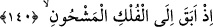

Yakutun bu adamda olduğunda ısrar ederler. Bu zat iyice zorlanınca şöyle bir an
teveccüh eder. Denizdeki balıklar hemen ağızlarındaki yakutlarla bu zâtın yanına
gelirler. Bu durumu gören halk bu çirkin isnatlarından özür dilerler. Ancak adam
yolcuların gözü önünde kalkar ve Allah Teâlâ’nın izni ile batmadan, boğulmadan
denizde yürüyüp gemiyi terk edip gider. İşte bundan dolayı kendisine “Zünnûn”
denilmiştir.
Şeyh-i Ekber (k.s.) der ki: “585/1190 yılında benim de Endülüs’te (İspanya)
bulunduğum sırada Yunus (a.s.)’ın kavminden bir grup Endülüs’te bir araya geldi. Ben
onlardan birinin yerdeki ayak izini ölçtüm. Adamın ayak izinin dört karışa yakın
olduğunu gördüm.”
Yunus (a.s.) onları kırk sene tevhid dinine dâvet etti. Onlar putlara tapıyorlardı ve
Yunus (a.s.)’ı ısrarla yalanladılar. Yunus (a.s.) onları üç yahut kırk gün sonra
kendilerine azap geleceği tehdidiyle aralarından ayrıldı. Sonra gökyüzünü siyah bir
bulut kapladı. Bu buluttan ayrılan yoğun duman kütleleri aşağı doğru inip şehirlerinin
üzerlerini kapladı. Böylece azap emareleri belirmiş oldu. Nihâyet azapla aralarında bir
mil mesafe kalınca bunlar ihlas ve samimiyetle Allah Teâlâ’ya yalvarıp yakardılar,
gözyaşı döktüler. Analarla çocukları, dişi merkeplerle sıpaları, sığırlarla buzağıları,
develerle yavrularını, koyunlarla kuzuları, atlarla yavrularını birbirlerinden ayırdılar.
Çul ve rahip elbiseleri giydiler. Sonra yalvarıp istiğfar ettiler. Allah’tan af ve mağfiret
dilediler. Nihâyet sahraya çıktılar; ağlamalar, inlemeler, yakarışlar göğe yükseldi.
Sonunda Allah Teâlâ onlardan azâbı bertaraf etti. Tövbelerini kabul etti. O gün âşûra
günü idi.[219]
Halbuki Yunus (a.s.) onların helak edilmelerini bekliyordu. Yunus (a.s.) akşamleyin
kavmine uğrayan bir oduncuya kavminin halini sordu. Adam kavmin sağlık ve afiyette
olduğunu söyledi. Azâbın bertaraf edilmesi için yaptıklarını haber verdi. Yunus (a.s.)
“Kendilerine karşı yalancı durumuna düştüğüm bir kavme artık dönemem” dedi.
Onlardan utanıp çekinerek Allah’tan gelecek vahyi beklemeden ülkeden çıkıp gitmek
üzere sahil yolunu tuttu. Allah Teâlâ şöyle buyuruyor:
140. Hani o, dolu bir gemiye binip kaçmıştı.
“Hani o,” insan, hayvan ve eşya ile “dolu bir gemiye binip kaçmıştı.”
“ ” kelimesinin asıl mânâsı kölenin efendisinden kaçmasıdır. Ancak Yunus (a.s.)
Rabbinden izinsiz olarak kavminden kaçınca bunun çirkinlik ve yanlışlığını tasvir için
mecaz olarak bu kelimenin kullanılması hoş olmuştur. Zira o da Allah’ın kulu ve
kölesidir. Nereye kaçıyor ki Allah onu çepeçevre kuşatmıştır. İzinsiz olarak
efendisinden kaçan kölenin geri dönünceye kadar farz ve nâfile hiçbir amel ve ibadeti